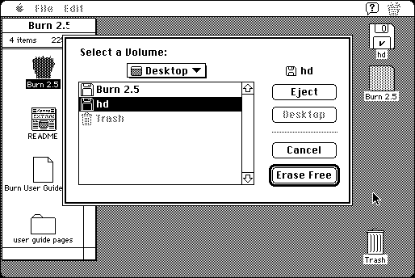

Download
burn-25.zip (102K) Burn 2.5 repackaged into a zipped hfs disk image and checksum file. The disk image can be mounted with Mini vMac.
burn-25.hqx (135K) Burn 2.5 in the original format.
copyright: Next Wave Software, Inc.
written by: Michael Watson and Paul Jensen
mod date: Nov 10, 1998
license: free for non-commercial use
Securely erase files and free disk space. For Mini vMac, erasing free space is useful because it allows better compression of a disk image, such as when creating an archive for distribution. Requires System 7.

If you find these downloads useful, please consider helping the Gryphel Project, which hosts them.
Here are the md5 checksums for the downloads, signed with Gryphel Key 5:
--------- GRY SIGNED TEXT --------- e80c63e365c19d43c64a2945d9007f37 burn-25.hqx 9d6ac410143e7a178aa7614a3dad6eb8 burn-25.zip ------- BEGIN GRY SIGNATURE ------- Gry/4Xa8CFcUzxdN/BAiJdAnPqa59yivi6ech/zd0Yzny2/1FHq/9siBh6vfTmd5 2S5Ncl7U+qDbbaCxKssNFzAH+2eYl/zrD3rxUivD86XpU3vKb/4vh4P0xxRURpoR Eg0UHXILt+X/orBdUx3gGG1sJxBCgAqlW7aYuGJPf5HPOhmFFvZ5m1oJFYsZTeQ4 -------- END GRY SIGNATURE --------